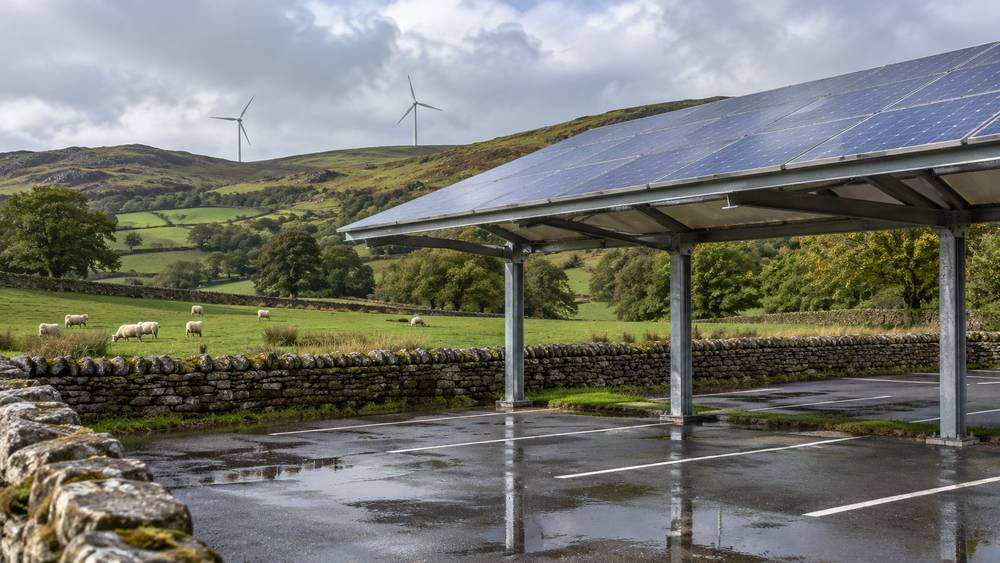

영국 웨일스 미래세대위원, 지방정부 10곳의 재생에너지 역할 법정 조사 시작…공유지·지역사회 소유·혜택 기금 따진다

22개 지방정부·4개 광역합동위원회 웰빙 목표 중 에너지 언급은 3개뿐 / 2027년 지방선거 뒤 권고 공개
영국 웨일스의 미래세대위원 데릭 워커가 11월 18일 지방정부가 땅과 자산, 계획 권한, 투자 결정, 구매력을 재생에너지 확대에 얼마나 쓰고 있는지 따지는 조사를 시작했다. 조사는 '미래세대 웰빙법' 제20조에 따른 검토로, 미래세대위원이 가진 가장 강한 권한이다. 대상은 콘위·앵글시·뉴포트·펨브룩셔·포위스·론다사이넌타프 등 6개 지방정부와 북부·중부·남동부·남서부 웨일스 4개 광역합동위원회다.
위원회가 낸 조사 위임사항에 따르면 웨일스 22개 지방정부와 4개 광역합동위원회가 이 법에 따라 정한 웰빙 목표 가운데 에너지를 직접 다룬 것은 3개뿐이었고, 그중 2개는 주택 에너지효율에 그쳤다. 웨일스의 재생에너지 설비는 2023년 약 3.7GW로, 스코틀랜드재생에너지협회가 집계한 스코틀랜드의 운영 설비 15GW 이상에 크게 못 미쳤다. 위원회는 지금 속도로는 2035년까지 전력 소비의 100%를 재생에너지로 채운다는 웨일스 정부 목표를 이루지 못한다고 봤다. 워커 위원은 "우리는 멈춰 서 있고 다른 나라들에 뒤처지고 있다"고 말했다.
조사는 지방정부가 가진 땅을 재생에너지 생산에 쓰는 방안, 지역사회·지역 소유를 돕는 방법, 개발사에서 받는 지역사회 혜택 기금을 협상하고 키우는 방법, 연기금 같은 투자 결정에서 새 발전원을 따지는지 등을 다룬다. 위원회는 에너지 요금을 낮춰 공공서비스 재원을 늘리고, 지역사회·공공 소유를 넓혀 부와 소득을 웨일스에 남기고, 농지와 자연을 지키는 것 등 여섯 가지를 목표로 내걸었다. 에너지효율 대책 전반, 에너지 빈곤, 소비자 요금 인하는 이번 조사 범위에서 뺐다.
증거 수집은 2027년 3월까지 이어지고, 결과와 권고는 2027년 지방선거가 끝난 뒤 5~6월에 공개한다. 조사 주제는 올해 7~10월 원탁회의 두 차례(60명 참여)와 공개 설문(51건 응답)을 거쳐 여섯 가지 후보 가운데 골랐다.
시민에너지 관점
웨일스 위원회는 지방정부 22곳의 웰빙 목표 가운데 에너지를 다룬 것이 3개뿐이라는 데서 조사를 시작했다. 공유지와 공공건물, 주차장을 어떻게 쓰느냐에 따라 재생에너지의 이익이 바깥 사업자에게 갈지 주민에게 남을지가 갈린다. 웨일스가 지역사회·공공 소유와 혜택 기금을 함께 들여다보는 까닭도 여기에 있다고 본다. 우리 지방정부도 에너지 계획에 쓸 수 있는 공유지 목록과 주민 출자 방식을 함께 담고, 그 이행을 스스로 점검하길 바란다.
출처: Future Generations Commissioner for Wales 2026-11-18 보도 「Future Generations Commissioner for Wales visits Caerleon Comprehensive school as he launches major review into renewable energy」 원문 보기
출처: Future Generations Commissioner for Wales 2026-11 「Ynni/ Energy Review (Section 20) Terms of Reference」 원문 보기